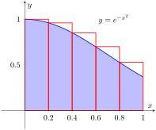
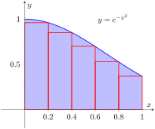

Example 1.5.2. Approximating definite integrals with rectangles.
Approximate \(\ds \int_0^1e^{-x^2}\, dx\) using the Left and Right Hand Rules with 5 equally spaced subintervals.
Solution.
We begin by partitioning the interval \([0,1]\) into 5 equally spaced intervals. We have \(\dx = \frac{1-0}5 = 1/5=0.2\text{,}\) so
\begin{equation*}
x_0 = 0,\,x_1 = 0.2,\,x_2 = 0.4,\,x_3 = 0.6,\,x_4 = 0.8,\,\text{ and } \,x_5 = 1\text{.}
\end{equation*}
Using the Left Hand Rule, we have:
\begin{align*}
\sum_{i=1}^n f(x_{i-1})\dx \amp = \big(f(x_0)+f(x_1) + f(x_2) + f(x_3) + f(x_4)\big)\dx\\
\amp = \big(f(0) + f(0.2) + f(0.4) + f(0.6) + f(0.8)\big)\dx\\
\amp \approx (1+0.9608 +0.8521 + 0.6977 + 0.5273)(0.2)\\
\amp \approx 0.8076\text{.}
\end{align*}
Using the Right Hand Rule, we have:
\begin{align*}
\sum_{i=1}^n f(x_{i})\dx \amp = \big(f(x_1) + f(x_2) + f(x_3) + f(x_4)+f(x_5)\big)\dx\\
\amp = \big(f(0.2) + f(0.4) + f(0.6) + f(0.8)+f(1)\big)\dx\\
\amp \approx (0.9608 +0.8521 + 0.6977 + 0.5273 + 0.3678)(0.2)\\
\amp \approx 0.6812\text{.}
\end{align*}

The graph of \(e^{-x^2}\) starts at \((0, 1)\) and slowly slopes downwards to the right as it slowly gets closer to the positive \(x\) axis. To use the left hand rule we divide the area between \([0, 1]\) five rectangles of equal widhth and decreasing height. As the curve moves closer to the \(x\) axis, the heights of the rectangles gets shorter even thought the widths stay the same. Because the curve is downwards sloping to the right, the top right corners of the rectangles contain a little region which is above the curve. As the curve moves downwards and the height of the rectangles become shorter, the area that is contained by the top right corners of the rectangles and the top of the curve gets larger. We calculate the sum of the areas of these rectangles.

For this image we consider the same downwards sloping curve of \(e^{-x^2}\text{.}\) We divide the area between \([0,1]\) into five rectangles of equal width and decreasing height. For the right hand rule the rectangles are drawn in such a way that the top right corners of the rectangles touch the bottom of the curve. There is a small area between the top left of the triangles and the bottom of the curve. This area gets larger as the curve moves downwards and the lengths of the rectangles decrease. For the left hand rule we add up the areas of these rectangles.
Figure 1.5.3 shows the rectangles used in each method to approximate the definite integral. These graphs show that in this particular case, the Left Hand Rule is an over approximation and the Right Hand Rule is an under approximation. To get a better approximation, we could use more rectangles, as we did in Section 1.3. We could also average the Left and Right Hand Rule results together, giving
\begin{equation*}
\frac{0.8076 + 0.6812}{2} = 0.7444\text{.}
\end{equation*}
The actual answer, accurate to 4 places after the decimal, is 0.7468, showing our average is a good approximation.